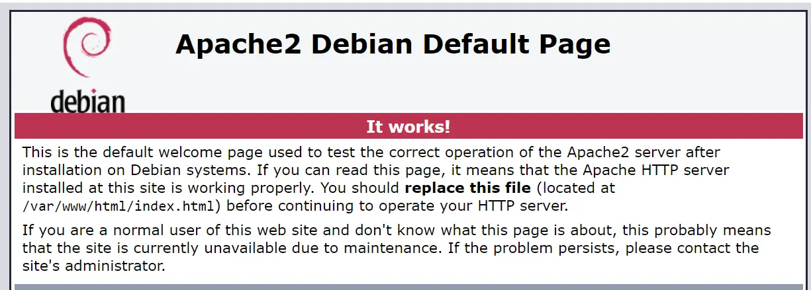
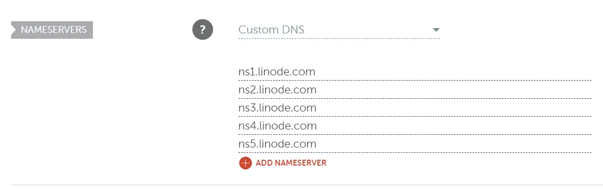
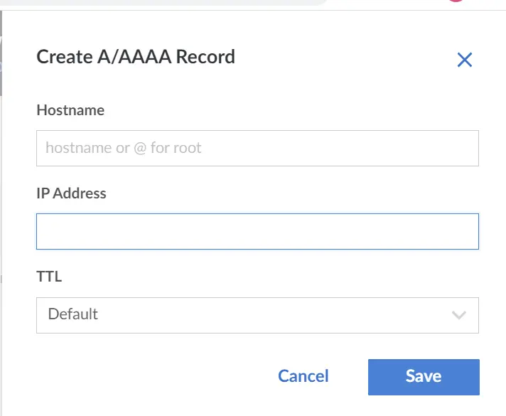

Create Astro blog like this one. Part 2: Linode
First of all, I want to start this part by urging you to use some static site hosting solution like Netlify.
A full list with examples is available in the documentation
If you are like me and like to host on your own, follow this guide.
My default is Linode Ubuntu servers.
As this page is static, and I'm not planning to be super popular, I will use smallest the Nanode instance.
While generating the server, Linode allows putting the ssh key without even logging into it.
Initiate apache2
You can use nginx as oftentimes it looks more "familiar" in their notation. I am using apache2 out of a habit.
sudo apt update
sudo apt install apache2
Just with that command, you should be able to navigate to the server IP and see the following page
Buy the domain and configure DNS
NameCheap is my go-to place for domains. ChatGPT suggested me this domain after prompting for a "software engineering blog domain with the pun in it". For DNS, we just need to point it to Linode.
Initiate git and pull the project from GitHub
sudo apt install gitWhile pulling the project with a combination of username and GitHub token is ok, I prefer using git credential manager. It requires downloading the image and uploading it to the server which is easy with WinSCP or FileZilla. Then you can run
sudo dpkg -i gcm-linux_amd64.2.0.935.deb
git config --global credential.credentialStore plaintext
cd /var/www/html/
git clone https://github.com/GITHUB_USERNAME/YOUR_ASTRO_REPOSITORY.git
You will be prompted for username and password. Password is github token (ghp_XXXX) we used earlier. Github credential manager will save it for all future uses.
root@localhost:/var/www/html# git clone https://github.com/GITHUB_USERNAME/YOUR_ASTRO_REPOSITORY.git
Cloning into 'YOUR_ASTRO_REPOSITORY'...
Username for 'https://github.com': GITHUB_USERNAME
Password for 'https://mariovisnjic@github.com':
remote: Enumerating objects: 52, done.
remote: Counting objects: 100% (52/52), done.
remote: Compressing objects: 100% (41/41), done.
remote: Total 52 (delta 7), reused 49 (delta 7), pack-reused 0
Receiving objects: 100% (52/52), 185.86 KiB | 26.55 MiB/s, done.
Resolving deltas: 100% (7/7), done.
cd YOUR_ASTRO_REPOSITORYIf you run npm install it might not work, then run the following:
sudo apt install nodejs npm -y
npm install -g n
n latest
node -v (terminal restart to show latest node version)
npm install
npm run build
Setting up apache2 to serve correct files on selected domain
Enable rewrite mode as we will need it and navigate to sites-available
cd /etc/apache2/sites-available
sudo a2enmod rewrite
systemctl restart apache2
edit 000-default.conf
<VirtualHost *:80>
ServerAdmin contact@byte-sized.fun
ServerName byte-sized.fun
ServerAlias www.byte-sized.fun
Redirect permanent / https://byte-sized.fun/
RewriteEngine on
RewriteCond %{SERVER_NAME} =www.byte-sized.fun [OR]
RewriteCond %{SERVER_NAME} =byte-sized.fun
RewriteRule ^ https://%{SERVER_NAME}%{REQUEST_URI} [END,NE,R=permanent]
</VirtualHost>
<VirtualHost *:443>
ServerAdmin contact@byte-sized.fun
ServerName byte-sized.fun
ServerAlias www.byte-sized.fun
DocumentRoot /var/www/html/astro-blog/dist
<Directory />
RewriteEngine On
AllowOverride All
Options +FollowSymLinks -MultiViews
<IfModule mod_authz_core.c>
<RequireAll>
Require all granted
Require not env BlockCountry
Require not env badbotlist
</RequireAll>
</IfModule>
</Directory>
<Directory /var/www/html/astro-blog/dist>
RewriteEngine On
AllowOverride All
Options +FollowSymLinks -MultiViews
<IfModule mod_authz_core.c>
<RequireAll>
Require all granted
Require not env BlockCountry
Require not env badbotlist
</RequireAll>
</IfModule>
</Directory>
LogLevel warn
CustomLog ${APACHE_LOG_DIR}/blog.log combined env=!dontlog
SetEnvIf Remote_Addr "127\.0\.0\.1" dontlog
SetEnvIf Remote_Addr "::1" dontlog
</VirtualHost>
Restart the apache server and install certbot. We will need to add a SSL certificate
sudo service apache2 reload
sudo apt install snapd
sudo snap install core
sudo snap refresh core
sudo snap install --classic certbot
This installation process will install the certbot executable in the /snap/bin/ directory. Create a symbolic link to this file in the /usr/bin/ directory to ensure that you can run the certbot command anywhere on your system:
sudo ln -s /snap/bin/certbot /usr/bin/certbotAt this point, we need to backtrack a bit and login back to Linode. Go to Linode, and navigate to the Domain menu.
Add the domain and point it to your server IP. The official wait for propagation is 24 hours but it is usually done within an hour. You can check thr progress on this link
Once done, open cmd in the server and run the certbot command.
certbotinput all fields leave empty to get the certificate for all sites
Debugging
If it is not working for any reason, a good starting point is:
apachectl configtestI had two errors of putting a blog in the wrong folder path in 000-domain.conf.
The other was a bit obscure error that needed me to add to /etc/apache2/apache2.conf
ServerName byte-sized.funPrevious step: Previous step Next step: Automating deployment